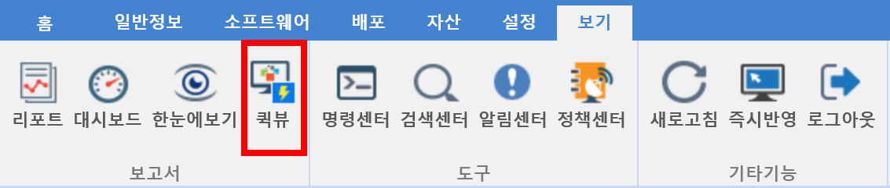
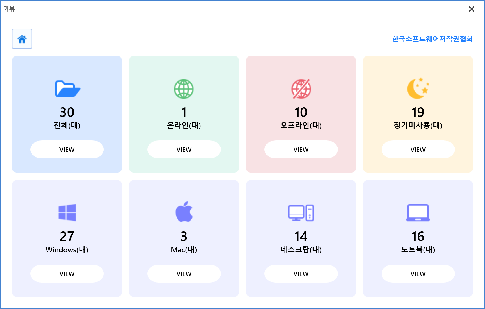

9-1-4. 퀵뷰
9-1-4. 퀵뷰
Source: https://www.sweeper.or.kr/etc/manual/9-1-4.html
9-1-4. 퀵뷰


장비 및 소프트웨어에 관한 간략한 핵심정보를 제공합니다.


장비
선택된 분류에 해당되는 장비를 확인 할 수 있습니다.

- 전체: 전체 장비를 확인 할 수 있습니다.
- 온라인: 현재 상태가 "온라인" 인 장비를 확인 할 수 있습니다.
- 오프라인: 현재 상태가 "오프라인"인 장비를 확인 할 수 있습니다.
- 장기미사용: 현재 상태가 "장기미사용"인 장비를 확인 할 수 있습니다.
- Windows: 전체 장비중 Windows OS를 사용하는 장비를 확인 할 수 있습니다.
- Mac: 전채 장비 중 Mac OS를 사용하는 장비를 확인 할 수 있습니다.
- 데스크탑: 전체 장비 중 데스크탑인 장비를 확인 할 수 있습니다.
- 노트북 : 전체 장비 중 노트북인 장비를 확인 할 수 있습니다.
소프트웨어
선택된 분류에 해당되는 소프트웨어를 확인 할 수 있습니다.

-
리스트 기준
-
전체 :설치 프로그램 리스트에 있는 소프트웨어 목록을 확인 할 수 있습니다.
- 유료: 설치 프로그램 리스트 중 유료 소프트웨어 목록을 확인 할 수 있습니다.
-
무료: 설치 프로그램 리스트 중 무료 소프트웨어 목록을 확인 할 수 있습니다.
-
설치기준
-
전체: 사용자가 설치한 전체 프로그램을 확인 할 수 있습니다.
- 유료: 사용자가 설치한 유료 프로그램을 확인 할 수 있습니다.
- 무료: 사용자가 설치한 무료 프로그램을 확인 할 수 있습니다.
© Copyright SWeeper Inc.. All Rights Reserved